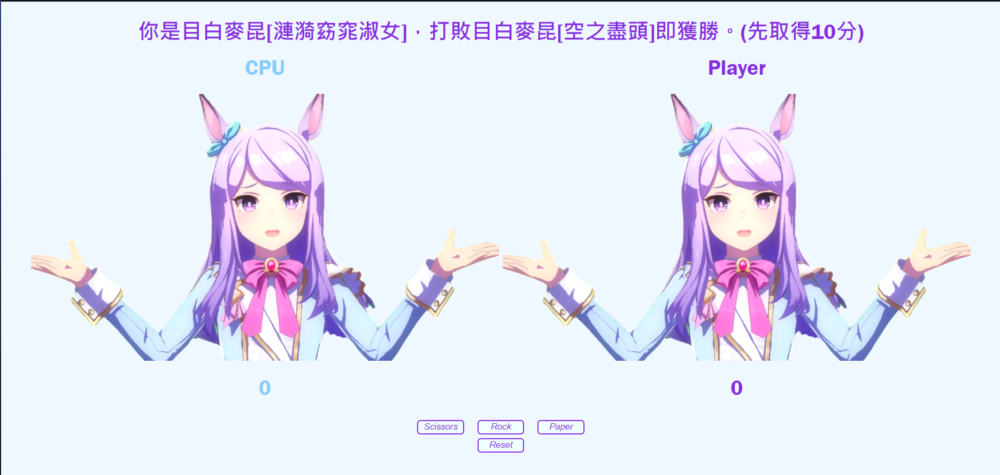

<!DOCTYPE html>
<html lang="zh-TW"></html>
<head>
    <title>我不會排版</title>
    <meta charset="utf-8">
    <meta name="viewport" content="width=device-width, initial-scale=1">
    <link rel="stylesheet" type="text/css" href="Layout.css"></link>
</head>
<body>
    <div class="header">
        <h1>超漂釀馬cQueen</h1>
    </div>
    <div class="navbar">
        <div class="navbar-content">
            <a href="https://zerorezerorezero.github.io/wp/javascript/HW9/I%20can't%20draw.html">我不會畫畫</a>
            <button id="toggleButton">聽V歌手嗎</button>
        </div>
        <div id="dropdown" class="dropdown-content">
            <a href="https://www.youtube.com/@OtonoseKanade">可愛的</a>
            <a href="https://www.youtube.com/@HoshimachiSuisei">大姊姊</a>
            <a href="https://www.youtube.com/@HACHIVSinger">宏亮的</a>
        </div>
    </div>
    <div class="row">
        <div class="column side">
            <p>我的作品:</p>
            <a href="https://zerorezerorezero.github.io/wp/麥昆猜拳/麥昆猜拳.html" class="no-hover"></a>
            <p><a href="https://zerorezerorezero.github.io/wp/javascript/HW9/I%20can't%20draw.html">我不會畫畫</a></p>
            <p></p>
        </div>
        <div class="column middle">
            <h2>哈囉沃的</h2>
            <p>
                其實呢，今天這篇文章主要就是想探討一下到底為什麼目白麥昆能這麼漂亮。首先就是她這個淡紫色的秀髮真的是非常的漂亮，
                然後就是她的眼睛又大又圓，而且這個高光歐買尬德超漂釀，閃亮亮眼睛漂漂釀釀，櫻桃小口好可愛喔，決勝服耳朵上還有超可愛藍色蝴蝶結，這套泳裝有超可愛花花欸，
                白禮服還有帽帽好可愛喔，她的手手還能這麼可愛又漂釀到底4怎樣啊，關於這件事真的是讓人想抱怨一下啊，她漂釀成這樣到底要人怎麼活阿，
                我被她漂亮死了要怎麼辦啊22222，她那麼漂釀555555222222我哭死。
            </p>
            <p>
                我問過魔鏡誰是世界上最美的女人，它回答我是目白麥昆啊啊啊TATTATTATTATTATQAQ，我就知道TATTATTAT22222沒有人比他更漂亮了TAT啊啊啊。
            </p>
        </div>
        <div class="column side">
            <p>OK破圖修好了</p>
            <p>然後這邊也是推歌區:</p>
            <p><a href="https://open.spotify.com/artist/4UK2Lzi6fBfUi9rpDt6cik?si=AZzxzl-3SgSrQOQhUshDqQ" style="color:aqua;">ヨルシカ</a></p>
            <p><a href="https://open.spotify.com/artist/4UK2Lzi6fBfUi9rpDt6cik?si=AZzxzl-3SgSrQOQhUshDqQ" class="no-hover"></a></p>
            <p><a href="https://open.spotify.com/artist/2yRnjWtHzmDELwYaUiX0Yh?si=VLsgwI1wQzaL32AwGLR6NA" style="color:aqua;">あたらよ</a></p>
            <p><a href="https://open.spotify.com/artist/2yRnjWtHzmDELwYaUiX0Yh?si=VLsgwI1wQzaL32AwGLR6NA" class="no-hover"></a></p>
            <p>我個人主推這幾首:</p>
            <p><a href="https://open.spotify.com/track/5uJOkhUYFa6kkDrlEmZk3D?si=d0de542033724cbb">「僕は...」</a></p>
            <p><a href="https://open.spotify.com/track/34jv2mOVzPjncrBncjYl6F?si=c8cb60a1164b4894">夏霞</a></p>
            <p><a href="https://open.spotify.com/track/53mioS2nnOFyknS2qGPig8?si=4617abe924334ffd">また夏を追う</a></p>
            <p><a href="https://open.spotify.com/track/4P4Ocx5koM1TT8RHQ0Ssgv?si=8ea318b106924bfb">憂い桜</a></p>
            <p><a href="https://open.spotify.com/artist/1m0fLOy3wFNcSpwKn75qJz?si=mhlEgbXUQyOAIcafw4AIIw" style="color:aqua;">DAZBEE</a>也不錯 但她主要是翻唱</p>
            <p><a href="https://open.spotify.com/artist/1m0fLOy3wFNcSpwKn75qJz?si=mhlEgbXUQyOAIcafw4AIIw" class="no-hover"></a></p>
        </div>
    </div>
    <script src="Layout.js"></script>
</body>